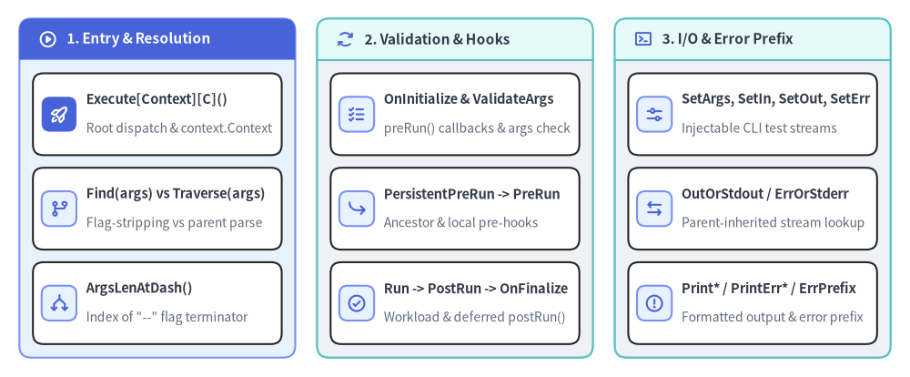
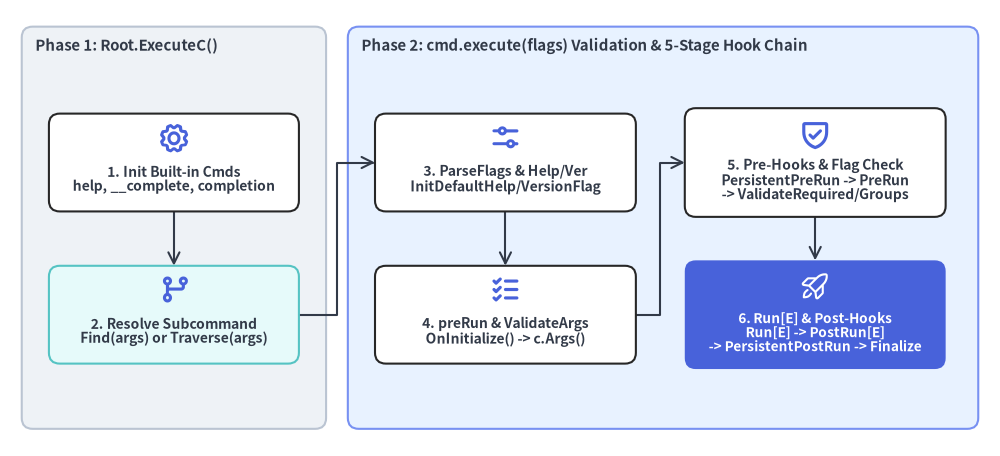

Command Execution, Resolution & I/O Streams
This chapter documents the execution entrypoints, command-tree resolution algorithms (Find vs. Traverse), global lifecycle callbacks (OnInitialize, OnFinalize, EnableTraverseRunHooks), and injectable I/O stream methods (SetArgs, SetOut, SetErr, SetIn, Print*, ErrPrefix) defined in command.go and cobra.go.

Source Code
from drawlib.canvas import save, setup
from drawlib.icons import phosphor
from drawlib.smartarts import CardList, Panel
from drawlib.styles import Colors, Styles
setup(width=188, height=78)
_ = Colors
col_specs = [
(
4.0,
"1. Entry & Resolution",
Styles.PrimaryNeutral,
Styles.PrimaryFlat,
Styles.WhiteBold.patch(text_size=11.0),
phosphor.play_circle,
Styles.WhiteBold,
[
("Execute[Context][C]()", "Root dispatch & context.Context", phosphor.rocket_launch, True),
("Find(args) vs Traverse(args)", "Flag-stripping vs parent parse", phosphor.git_branch, False),
("ArgsLenAtDash()", "Index of \"--\" flag terminator", phosphor.arrows_split, False),
],
),
(
65.5,
"2. Validation & Hooks",
Styles.Neutral,
Styles.SecondaryNeutral,
Styles.DarkBold.patch(text_size=11.0),
phosphor.arrows_clockwise,
Styles.PrimaryBold,
[
("OnInitialize & ValidateArgs", "preRun() callbacks & args check", phosphor.list_checks, False),
("PersistentPreRun -> PreRun", "Ancestor & local pre-hooks", phosphor.arrow_bend_down_right, False),
("Run -> PostRun -> OnFinalize", "Workload & deferred postRun()", phosphor.check_circle, False),
],
),
(
127.0,
"3. I/O & Error Prefix",
Styles.Neutral,
Styles.SecondaryNeutral,
Styles.DarkBold.patch(text_size=11.0),
phosphor.terminal_window,
Styles.PrimaryBold,
[
("SetArgs, SetIn, SetOut, SetErr", "Injectable CLI test streams", phosphor.sliders_horizontal, False),
("OutOrStdout / ErrOrStderr", "Parent-inherited stream lookup", phosphor.arrows_left_right, False),
("Print* / PrintErr* / ErrPrefix", "Formatted output & error prefix", phosphor.warning_circle, False),
],
),
]
for x0, title, body_style, hdr_style, hdr_text_style, hdr_icon, hdr_icon_style, items in col_specs:
panel = Panel(
title,
"",
style=body_style,
header_style=hdr_style,
text_style=hdr_text_style,
icon=hdr_icon,
icon_style=hdr_icon_style,
header_variant="filled",
header_height=8.5,
)
panel.draw((x0, 4.0), width=57.0, height=70.0, align="bottom_left")
inner_xy, inner_w, inner_h = panel.get_content_box(
(x0, 4.0),
width=57.0,
height=70.0,
padding=(2.8, 2.8),
align="bottom_left",
)
cards = CardList(
style=Styles.White,
text_style=Styles.DarkBold.patch(text_size=10.5),
description_style=Styles.Muted.patch(text_size=10.0),
badge_shape="rounded_rect",
badge_style=Styles.PrimaryNeutral,
icon_style=Styles.PrimaryBold,
direction="vertical",
spacing=2.6,
)
for mod_name, mod_desc, mod_icon, is_focal in items:
if is_focal:
cards.add(
mod_name,
mod_desc,
icon=mod_icon,
badge_style=Styles.PrimaryFlat,
icon_style=Styles.WhiteBold,
)
else:
cards.add(mod_name, mod_desc, icon=mod_icon)
cards.draw(inner_xy, width=inner_w, height=inner_h, align="bottom_left")
save()
methodExecution Entrypoints & context.Context#
Cobra provides four execution methods on *Command plus Context() and SetContext() (command.go:L262-L277, L1059-L1170). Calling Execute* on any subcommand automatically delegates upward to c.Root().ExecuteC().
func (c *Command) Execute() error
func (c *Command) ExecuteC() (cmd *Command, err error)
func (c *Command) ExecuteContext(ctx context.Context) error
func (c *Command) ExecuteContextC(ctx context.Context) (*Command, error)
func (c *Command) Context() context.Context
func (c *Command) SetContext(ctx context.Context)
| Method | Signature | Description |
|---|---|---|
Execute |
func (c *Command) Execute() error |
Primary CLI entrypoint. Calls _, err := c.ExecuteC() and returns err. Uses os.Args[1:] unless overridden via SetArgs(). |
ExecuteC |
func (c *Command) ExecuteC() (cmd *Command, err error) |
Full execution engine returning both the resolved leaf *Command that was executed and any error. Ensures c.ctx is initialized (context.Background() if nil), injects default help, __complete, and completion commands, validates command groups (checkCommandGroups()), resolves the target subcommand via Traverse() or Find(), propagates ctx to cmd.ctx, and runs cmd.execute(flags). |
ExecuteContext |
func (c *Command) ExecuteContext(ctx context.Context) error |
Sets c.ctx = ctx and calls c.Execute(). Use with signal.NotifyContext for graceful cancellation (Ctrl+C / SIGTERM). |
ExecuteContextC |
func (c *Command) ExecuteContextC(ctx context.Context) (*Command, error) |
Sets c.ctx = ctx and calls c.ExecuteC(), returning the executed *Command and error. |
Context |
func (c *Command) Context() context.Context |
Returns the context.Context associated with c. Inside Run / RunE / ValidArgsFunction, returns the context passed to ExecuteContext[C] or SetContext (or context.Background() if Execute[C] was called without a context). Returns nil before execution if SetContext was not called. |
SetContext |
func (c *Command) SetContext(ctx context.Context) |
Pre-assigns c.ctx = ctx on a command before execution. Overwritten if ExecuteContext or ExecuteContextC is subsequently called. |

Source Code
from drawlib.canvas import save, setup
from drawlib.diagrams.architecture import ArchitectureDiagram, Node, NodeGroup, PhosphorIcon
from drawlib.styles import Colors, Styles
setup(width=184, height=84)
_ = Colors
d = ArchitectureDiagram(
node_style=Styles.PrimaryBold,
node_text_style=Styles.DarkBold.patch(text_size=10.0),
edge_style=Styles.DarkBold.patch(line_width=1.5),
edge_text_style=Styles.Dark.patch(text_size=9.8),
node_card_style=Styles.White,
)
phase1 = d.add(
NodeGroup(
"Phase 1: Root.ExecuteC()",
width=56,
height=74,
style=Styles.Neutral.patch(shape_r=2.0),
text_style=Styles.DarkBold.patch(text_size=10.8, halign="left", valign="top"),
),
xy=(4.0, 5.0),
)
init_cmds = phase1.add(
Node(
"1. Init Built-in Cmds\nhelp, __complete, completion",
icon=PhosphorIcon.GEAR,
icon_size=6.0,
width=46,
height=18,
card_style=Styles.White.patch(shape_r=2.0),
),
xy=(28.0, 49.0),
)
resolve_cmd = phase1.add(
Node(
"2. Resolve Subcommand\nFind(args) or Traverse(args)",
icon=PhosphorIcon.GIT_BRANCH,
icon_size=6.0,
width=46,
height=18,
card_style=Styles.SecondaryNeutral.patch(shape_r=2.0),
),
xy=(28.0, 21.0),
)
phase2 = d.add(
NodeGroup(
"Phase 2: cmd.execute(flags) Validation & 5-Stage Hook Chain",
width=116,
height=74,
style=Styles.PrimaryNeutral.patch(shape_r=2.0),
text_style=Styles.DarkBold.patch(text_size=10.8, halign="left", valign="top"),
),
xy=(64.0, 5.0),
)
parse_node = phase2.add(
Node(
"3. ParseFlags & Help/Ver\nInitDefaultHelp/VersionFlag",
icon=PhosphorIcon.SLIDERS_HORIZONTAL,
icon_size=6.0,
width=48,
height=18,
card_style=Styles.White.patch(shape_r=2.0),
),
xy=(29.0, 49.0),
)
prerun_node = phase2.add(
Node(
"4. preRun & ValidateArgs\nOnInitialize() -> c.Args()",
icon=PhosphorIcon.LIST_CHECKS,
icon_size=6.0,
width=48,
height=18,
card_style=Styles.White.patch(shape_r=2.0),
),
xy=(29.0, 21.0),
)
hooks_pre = phase2.add(
Node(
"5. Pre-Hooks & Flag Check\nPersistentPreRun -> PreRun\n-> ValidateRequired/Groups",
icon=PhosphorIcon.SHIELD_CHECK,
icon_size=6.0,
width=48,
height=20,
card_style=Styles.White.patch(shape_r=2.0),
),
xy=(86.0, 49.0),
)
run_post = phase2.add(
Node(
"6. Run[E] & Post-Hooks\nRun[E] -> PostRun[E]\n-> PersistentPostRun -> Finalize",
icon=PhosphorIcon.ROCKET_LAUNCH,
icon_size=6.0,
width=48,
height=20,
style=Styles.White,
text_style=Styles.WhiteBold.patch(text_size=9.8),
card_style=Styles.PrimaryFlat.patch(shape_r=2.0),
),
xy=(86.0, 21.0),
)
d.connect(init_cmds, resolve_cmd)
d.connect(resolve_cmd, parse_node)
d.connect(parse_node, prerun_node)
d.connect(prerun_node, hooks_pre)
d.connect(hooks_pre, run_post)
d.draw((0.0, 0.0))
save()
methodCommand Resolution & Dash Boundary (Find, Traverse, ArgsLenAtDash)#
When ExecuteC() dispatches an argument slice, it resolves the target *Command using either Find() (default) or Traverse() (when Root().TraverseChildren == true).
func (c *Command) Find(args []string) (*Command, []string, error)
func (c *Command) Traverse(args []string) (*Command, []string, error)
func (c *Command) ArgsLenAtDash() int
| Method | Signature | Resolution Strategy & Behavior |
|---|---|---|
Find |
func (c *Command) Find(args []string) (*Command, []string, error) |
Default resolver (TraverseChildren == false): Uses stripFlags(args, c) to skip over flags and flag arguments without mutating parent FlagSet state, descending via findNext() until no further child subcommand matches. Returns (commandFound, remainingArgs, err). If commandFound.Args == nil, validates legacyArgs(commandFound, stripFlags(a, commandFound)). |
Traverse |
func (c *Command) Traverse(args []string) (*Command, []string, error) |
Parent-parsing resolver (TraverseChildren == true): Scans args token-by-token on each parent command, calls c.ParseFlags(flags) on each parent's flags before descending into cmd.Traverse(args[i+1:]). Allows parent commands to receive their own local flags on the command line before a subcommand token. |
ArgsLenAtDash |
func (c *Command) ArgsLenAtDash() int |
Delegates to c.Flags().ArgsLenAtDash(). Returns the index in c.Flags().Args() (the args slice passed to Run/RunE) at which the -- flag-termination token was encountered during ParseFlags(), or -1 if -- was not present on the command line. |
Example: Splitting Positional Arguments at -- with ArgsLenAtDash()#
execCmd := &cobra.Command{
Use: "exec <pod> [-- <command> [args...]]",
Short: "Execute a command inside a container",
Args: cobra.MinimumNArgs(1),
RunE: func(cmd *cobra.Command, args []string) error {
dashIdx := cmd.ArgsLenAtDash()
podName := args[0]
var remoteCmd []string
if dashIdx != -1 {
remoteCmd = args[dashIdx:]
}
cmd.Printf("Pod: %s, Remote command: %v\n", podName, remoteCmd)
return nil
},
}
funcGlobal Lifecycle Callbacks & Hook Traversal#
Cobra provides two global callback registration functions and a global hook-traversal toggle in cobra.go (L64-L66, L97-L107):
var EnableTraverseRunHooks = false
func OnInitialize(y ...func())
func OnFinalize(y ...func())
Order of Execution Inside cmd.execute(a []string) (command.go:L905-L1045)#
- Deprecation Check: If
len(c.Deprecated) > 0, prints"Command %q is deprecated, %s\n". - Default Flags & Parsing: Calls
c.InitDefaultHelpFlag(),c.InitDefaultVersionFlag(), andc.ParseFlags(a). On error, invokesc.FlagErrorFunc()(c, err). - Help & Version Short-Circuit: If
--helpistrue, returnsflag.ErrHelp(which triggerscmd.HelpFunc()inExecuteC()). Ifc.Version != ""and--versionistrue, rendersversionTemplateand returns. - Runnable Check: If
!c.Runnable(), returnsflag.ErrHelp. - Global Initializers & Deferred Finalizers: Calls
c.preRun()(executing allcobra.OnInitializecallbacks in registration order) and registersdefer c.postRun()(which executes allcobra.OnFinalizecallbacks whenexecute()returns). - Positional Argument Validation: Calls
c.ValidateArgs(argWoFlags). PersistentPreRun[E]Chain:- When
cobra.EnableTraverseRunHooks == false(default): Walks upp := c; p != nil; p = p.Parent()and executes only the first non-nilPersistentPreRunE(orPersistentPreRun) encountered, then breaks. - When
cobra.EnableTraverseRunHooks == true: Collects all ancestors fromRoot()down tocand executes every definedPersistentPreRunE/PersistentPreRunin top-down order.
- When
- Local
PreRun[E]: Executesc.PreRunE(c, argWoFlags)(orc.PreRun). - Required Flag & Flag Group Validation: Executes
c.ValidateRequiredFlags()followed byc.ValidateFlagGroups(). (Note: Because these run afterPersistentPreRun[E]andPreRun[E], pre-run hooks can dynamically populate or mark flags before validation!) - Primary Action (
Run[E]): Executesc.RunE(c, argWoFlags)(orc.Run). - Local
PostRun[E]: Executesc.PostRunE(c, argWoFlags)(orc.PostRun). PersistentPostRun[E]Chain: Walksp := c; p != nil; p = p.Parent(), executing only the closest ancestor's hook by default, or all ancestor hooks bottom-up whenEnableTraverseRunHooks == true.
methodInput/Output Streams, Arg Injection & Error Prefixes#
Every *Command maintains injectable inReader (io.Reader), outWriter (io.Writer), errWriter (io.Writer), args ([]string), and errPrefix (string) fields that inherit from parent commands when unset (command.go:L279-L310, L375-L440, L642-L652, L1434-L1462).
// Argument & Stream Setters
func (c *Command) SetArgs(a []string)
func (c *Command) SetOut(newOut io.Writer)
func (c *Command) SetErr(newErr io.Writer)
func (c *Command) SetIn(newIn io.Reader)
func (c *Command) SetOutput(output io.Writer) // Deprecated: Use SetOut and/or SetErr instead
// Stream Getters (Walk parent chain before falling back to os.Std*)
func (c *Command) OutOrStdout() io.Writer
func (c *Command) OutOrStderr() io.Writer
func (c *Command) ErrOrStderr() io.Writer
func (c *Command) InOrStdin() io.Reader
// Formatted Print Helpers
func (c *Command) Print(i ...interface{})
func (c *Command) Println(i ...interface{})
func (c *Command) Printf(format string, i ...interface{})
func (c *Command) PrintErr(i ...interface{})
func (c *Command) PrintErrln(i ...interface{})
func (c *Command) PrintErrf(format string, i ...interface{})
// Error Message Prefix (Default: "Error:")
func (c *Command) SetErrPrefix(s string)
func (c *Command) ErrPrefix() string
| Method | Fallback When nil / Unset |
Description |
|---|---|---|
SetArgs(a []string) |
os.Args[1:] |
Overrides command-line arguments on the root command. Pass []string{} (non-nil empty slice) in unit tests to simulate zero CLI arguments without falling back to os.Args[1:]. |
SetOut(newOut io.Writer) |
Parent() -> os.Stdout |
Sets c.outWriter for standard output and Help() output. |
SetErr(newErr io.Writer) |
Parent() -> os.Stderr |
Sets c.errWriter for error messages and PrintErr* calls. |
SetIn(newIn io.Reader) |
Parent() -> os.Stdin |
Sets c.inReader for interactive standard input reads. |
SetOutput(output io.Writer) |
os.Stderr |
Deprecated: Sets both c.outWriter = output and c.errWriter = output. Use SetOut() and SetErr() instead. |
OutOrStdout() |
c.parent.getOut(os.Stdout) |
Returns c.outWriter if set on c or any ancestor; otherwise returns os.Stdout. Used by HelpFunc() and --version. |
OutOrStderr() |
c.parent.getOut(os.Stderr) |
Returns c.outWriter if set on c or any ancestor; otherwise returns os.Stderr. Used by UsageFunc() and c.Print*(). |
ErrOrStderr() |
c.parent.getErr(os.Stderr) |
Returns c.errWriter if set on c or any ancestor; otherwise returns os.Stderr. Used by c.PrintErr*(). |
InOrStdin() |
c.parent.getIn(os.Stdin) |
Returns c.inReader if set on c or any ancestor; otherwise returns os.Stdin. |
Print / Println / Printf |
Writes to c.OutOrStderr() |
Prints formatted output to c.outWriter if configured via SetOut(), or falls back to os.Stderr if SetOut() was never called. |
PrintErr / PrintErrln / PrintErrf |
Writes to c.ErrOrStderr() |
Prints formatted error messages to c.errWriter if configured via SetErr(), or falls back to os.Stderr. |
SetErrPrefix(s string) / ErrPrefix() |
Parent() -> "Error:" |
Configures or retrieves the prefix printed before command errors in ExecuteC() (c.PrintErrln(cmd.ErrPrefix(), err.Error())). |
[!IMPORTANT]
cmd.Print*vs.fmt.Fprint(cmd.OutOrStdout(), ...): Notice thatcmd.Print(),cmd.Println(), andcmd.Printf()callc.OutOrStderr(), which defaults toos.StderrwhenSetOut()has not been explicitly called! To write toos.Stdoutby default while still respectingSetOut(buf)in unit tests, either callrootCmd.SetOut(os.Stdout)during initialization or write tofmt.Fprintln(cmd.OutOrStdout(), ...).